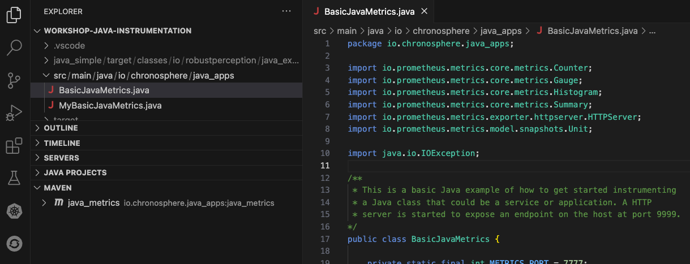
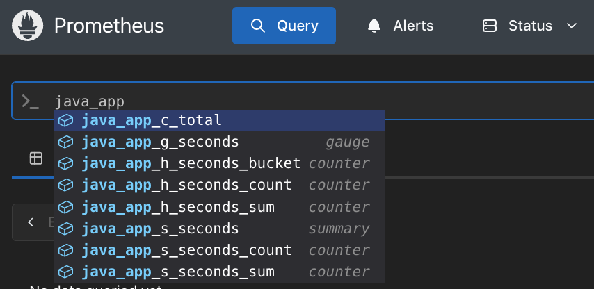

Instrumenting - Example Java application
For the rest of this lab you've chosen to run your instrumenting experience on Kubernetes (k3s)
using Rancher Desktop.
We'll assume you've already got a running k3s cluster with Helm, and the
We'll assume you've already got a running k3s cluster with Helm, and the
prometheus namespace in place, as you did in a previous lab.
Instrumenting - Rancher setup assumptions
Rancher Desktop ships two container engines. Check which one you're running under
Preferences > Container Engine before you get to the build steps below, both commands
are shown throughout, and you just pick the one that matches.
Instrumenting - Java metrics demo project
First, we'll give you a project with all the Java layout you need and a completed example of
the four basic metrics instrumented for an example application. To install this locally:
- Download and unzip the Prometheus Java Metrics Demo
- Unzip the
prometheus-java-metrics-demo-v0.5.zip file in your workshop directory - Open the project in your favorite IDE (examples shown here use VSCode)
Instrumenting - Download and unzip project
Once you have downloaded the project using the link provided previously, just unzip into its
own directory as shown (Note: examples shown are on Mac OS X system):
$ unzip workshop-prometheus/prometheus-java-metrics-demo-v0.5.zip
Archive: /Users/erics/Downloads/prometheus-java-metrics-demo-v0.5.zip
a66e4ea8ea9d1313b257fcf3b3321d9ce47a86e8
creating: prometheus-java-metrics-demo-v0.5/
extracting: prometheus-java-metrics-demo-v0.5/.gitignore
inflating: prometheus-java-metrics-demo-v0.5/README.md
inflating: prometheus-java-metrics-demo-v0.5/mybasic-pom.xml
inflating: prometheus-java-metrics-demo-v0.5/pom.xml
creating: prometheus-java-metrics-demo-v0.5/src/
creating: prometheus-java-metrics-demo-v0.5/src/main/
creating: prometheus-java-metrics-demo-v0.5/src/main/java/
creating: prometheus-java-metrics-demo-v0.5/src/main/java/io/
creating: prometheus-java-metrics-demo-v0.5/src/main/java/io/chronosphere/
creating: prometheus-java-metrics-demo-v0.5/src/main/java/io/chronosphere/java_apps/
inflating: prometheus-java-metrics-demo-v0.5/src/main/java/io/chronosphere/java_apps/BasicJavaMetrics.java
inflating: prometheus-java-metrics-demo-v0.5/src/main/java/io/chronosphere/java_apps/MyBasicJavaMetrics.java
Instrumenting - Opening project in your IDE
Here you see the project opened in VSCode (use any tooling you like), which allows you to explore
the project single class file with a fully instrumented example Basic Java Metric application:

Instrumenting - Building the Java example
You have to build the
BasicJavaMetrics application from the command line
in the project root directory, before you can build your container image. First build your
Java using Maven as shown here:
$ cd prometheus-java-metrics-demo-v0.5/
$ mvn clean install (watch for BUILD SUCCESS)
Instrumenting - Building an image the cluster can see
Kubernetes pulls images from a registry, and we never push this one anywhere. Build it straight
into the image store your cluster reads from, using whichever engine Rancher Desktop is set to:
# Container engine set to dockerd (moby) - k3s reads the docker image store directly.
#
$ docker build --load -t basic-java-metrics -f Buildfile .
# Container engine set to containerd - build into the k8s namespace.
#
$ nerdctl --namespace k8s.io build -t basic-java-metrics -f Buildfile .
That trailing
. is the build context, the project root where
Buildfile and the just-built target/ directory both
live. On containerd, the --namespace k8s.io is not optional. On dockerd, if
your Docker CLI defaults to a docker-container buildx builder, a plain
docker build only leaves the result in the BuildKit cache, never in
docker images, hence the --load.
Instrumenting - Verifying the built image
Looking up our built image to verify everything went well. Ask for it by name, a bare
docker images lists every image on your machine and the one we care about
is lost in the noise:
$ docker images basic-java-metrics
IMAGE ID DISK USAGE CONTENT SIZE
basic-java-metrics:latest 21d6c8d06793 210MB 78.4MB
On a containerd set up the command is
nerdctl --namespace k8s.io images basic-java-metrics.
Instrumenting - Java metrics demo manifest
Using any editor you like, create a file named
basic-java-metrics.yaml:
apiVersion: apps/v1
kind: Deployment
metadata:
name: basic-java-metrics
spec:
replicas: 1
selector:
matchLabels:
app: basic-java-metrics
template:
metadata:
labels:
app: basic-java-metrics
spec:
containers:
- name: basic-java-metrics
image: basic-java-metrics:latest
imagePullPolicy: IfNotPresent
ports:
- containerPort: 7777
---
apiVersion: v1
kind: Service
metadata:
name: basic-java-metrics
spec:
selector:
app: basic-java-metrics
ports:
- port: 7777
targetPort: 7777
Instrumenting - Confirming your cluster is up
Don't assume the cluster from an earlier lab is still there and reachable, Rancher Desktop may
not have finished starting, or may not be running at all. Check before you apply anything:
$ kubectl get nodes
NAME STATUS ROLES AGE VERSION
lima-rancher-desktop Ready control-plane,master 12d v1.31.1+k3s1
If instead you get
dial tcp 127.0.0.1:6443: connect: connection refused,
the k3s API server isn't up yet. Start (or wait for) Rancher Desktop with
rdctl start until its Kubernetes indicator goes green, then retry.
Instrumenting - Running Java on the cluster
Deploy it into the
prometheus namespace, then port-forward it to your local
machine, in its own terminal window, so you can validate it the same way as the other paths. If
you skipped ahead or aren't sure the namespace still exists, this first command is safe to run
every time, it creates the namespace only if missing and no-ops otherwise:
$ kubectl create namespace prometheus --dry-run=client -o yaml | kubectl apply -f -
$ kubectl apply -f basic-java-metrics.yaml -n prometheus
deployment.apps/basic-java-metrics created
service/basic-java-metrics created
$ kubectl port-forward -n prometheus svc/basic-java-metrics 7777:7777
Instrumenting - Validating Java metrics setup
Make sure the Java metrics endpoint is working by opening the endpoint to be scraped by a
Prometheus instance on
http://localhost:7777/metrics, showing something
like this (note the classic histogram format with le bucket labels):
# HELP java_app_c_total example counter
# TYPE java_app_c_total counter
java_app_c_total{status="error"} 239.0
java_app_c_total{status="ok"} 478.0
# HELP java_app_g_seconds is a gauge metric
# TYPE java_app_g_seconds gauge
java_app_g_seconds{value="value"} 7.29573889110867
# HELP java_app_h_seconds is a classic histogram metric
# TYPE java_app_h_seconds histogram
java_app_h_seconds_bucket{method="GET",path="/",status_code="200",le="0.005"} 0
java_app_h_seconds_bucket{method="GET",path="/",status_code="200",le="0.01"} 0
...
java_app_h_seconds_bucket{method="GET",path="/",status_code="200",le="10.0"} 10
java_app_h_seconds_bucket{method="GET",path="/",status_code="200",le="+Inf"} 239
java_app_h_seconds_count{method="GET",path="/",status_code="200"} 239
java_app_h_seconds_sum{method="GET",path="/",status_code="200"} 28475.853574282995
# HELP java_app_s_seconds is summary metric (request latency in seconds)
# TYPE java_app_s_seconds summary
java_app_s_seconds{status="ok",quantile="0.5"} 2.870230936180606
java_app_s_seconds{status="ok",quantile="0.95"} 4.888056778494996
java_app_s_seconds{status="ok",quantile="0.99"} 4.903344773262025
java_app_s_seconds_count{status="ok"} 239
java_app_s_seconds_sum{status="ok"} 607.9779550254922
Instrumenting - Prometheus configuration new metrics
The metrics are exposed inside the cluster on
basic-java-metrics:7777, but
they will not be scraped by Prometheus until you've updated its configuration to add this new
end point. Let's update the scrapeConfigs block of your
workshop-values.yaml file to add the java application job as shown, with a
couple of custom labels for fun:
# Scraping only Prometheus.
scrapeConfigs:
... <<<< LEAVE WHAT IS ALREADY THERE
# Scraping java metrics.
java_app:
job_name: java_app
static_configs:
- targets: ["basic-java-metrics:7777"]
labels:
job: java_app
env: workshop-lab8
Intermezzo - No host trickery needed here
On the container path you'd hit a
Prometheus and your java app are both Pods in the same
DOWN target here and have to work out
host.containers.internal. Not on Kubernetes, and the target above already
works first try, why?Prometheus and your java app are both Pods in the same
prometheus
namespace. In-cluster DNS resolves Service names directly to their backing Pods, on the port
the Service publishes, no NAT and no container-runtime-specific hostname required. It's the
same reason the services job from earlier labs could target
services-demo:8080 directly.
Instrumenting - Applying your configuration
Apply the updated values with Helm. If nothing changed since your last install, Helm reports it
as up to date and does nothing, no harm in running it:
$ helm upgrade --install workshop-prometheus prometheus-community/prometheus \
--version 29.20.0 \
--namespace prometheus --create-namespace \
-f workshop-values.yaml
Port-forward Prometheus, in its own terminal window, then validate in the query console using
up to confirm the endpoint is being scraped:
$ kubectl port-forward -n prometheus svc/workshop-prometheus-server 9090:9090
Instrumenting - Starting my Java metrics
Now stop the running port-forward to
Let's start by creating your own Java metrics application starting with the minimal setup needed to get your Java application running and exposing it's
basic-java-metrics (from the console
just hit CTRL + C), the pod itself can keep running for now.Let's start by creating your own Java metrics application starting with the minimal setup needed to get your Java application running and exposing it's
/metrics. Instead of
coding it all by hand, we've put a starting point in the file
MyBasicJavaMetrics.java found in the same directory, so open this file in your
IDE:
src/main/java/io/chronosphere/java_apps/MyBasicJavaMetrics.java
Instrumenting - Exploring MyBasicJavaMetrics
This class has a few basic imports, then a variable you can use to set the port you want your
metrics to be exposed on. The main method has two parts, first you instrument this class with
metrics, currently commented out as placeholders:
public static void main(String[] args) throws InterruptedException, IOException {
// Set up and default Java metrics.
//JvmMetrics.builder().register();
// Initialize Counter.
// TODO: counter init
// Initialize Gauge.
// TODO: gauge init
// Initialize Histogram.
// TODO: histogram init
// Initialize Summary.
// TODO: summary init
// Start thread and apply values to metrics.
// TODO: set up this thread and populate metrics.
Instrumenting - Exploring more MyBasicJavaMetrics
The second half of the main method is used to set up a simple web server to serve the metrics
up for scraping by Prometheus and then a few print statements to notify you that instrumentation
has completed and that your application or service has started:
HTTPServer server = HTTPServer.builder().port(METRICS_PORT).buildAndStart();
System.out.println("HTTPServer listening on port http://localhost:" + server.getPort() + "/metrics");
System.out.println("");
System.out.println("Basic Java metrics setup successful...");
System.out.println("");
// Insert your code here for application or microservice.
System.out.println("My application or service started...");
System.out.println("");
}
Instrumenting - Building and running my metrics
To help you run this
MyBasicJavaMetrics.java class file you are given a
separate mybasic-pom.xml file, so either point your IDE build process at this
new pom file, or follow the command line example shown below:
$ cd prometheus-java-metrics-demo-v0.5/
$ mvn -f mybasic-pom.xml clean install (watch for BUILD SUCCESS)
Instrumenting - Editing container build file
Now you need to use the provided
Buildfile but you need to edit this to
pull the new jar file into your container image, so open your Buildfile, edit as shown to use
your newly built jar file:
FROM eclipse-temurin:21
ADD target/mybasic_java_metrics-1.0-SNAPSHOT-jar-with-dependencies.jar java_metrics-1.0-SNAPSHOT-jar-with-dependencies.jar
ENTRYPOINT ["java", "-jar","java_metrics-1.0-SNAPSHOT-jar-with-dependencies.jar"]
EXPOSE 9999
Instrumenting - Building new image into the cluster
Build your new image pulling the new jar file as shown, matching whichever engine you picked
earlier:
$ docker build --load -t basic-java-metrics -f Buildfile .
# or on containerd:
$ nerdctl --namespace k8s.io build -t basic-java-metrics -f Buildfile .
Instrumenting - Updating your deployment manifest
MyBasicJavaMetrics listens on 9999, not 7777, so edit
basic-java-metrics.yaml, changing every occurrence of
7777 to 9999 (the containerPort, and both the
Service's port and targetPort), then apply and re-forward:
$ kubectl apply -f basic-java-metrics.yaml -n prometheus
deployment.apps/basic-java-metrics configured
service/basic-java-metrics configured
$ kubectl port-forward -n prometheus svc/basic-java-metrics 9999:9999
Instrumenting - Validating basic metrics setup
Make sure the basic metrics endpoint is working by opening the endpoint to be scraped by a
Prometheus instance on
But wait, it's showing a blank screen???
localhost:9999/metrics.But wait, it's showing a blank screen???
Instrumenting - Uncommenting default Java metrics
If you were looking closely at the main method, you might have noticed that there was a
commented out line
//JvmMetrics.builder().register(); that can be uncommented
to initialize all the default Java metrics:
// Set up and default Java metrics.
//JvmMetrics.builder().register(); <<<<< UNCOMMENT THIS LINE
// Initialize Counter.
// TODO: counter init
Instrumenting - Rebuilding and rolling out
After editing the default metrics initialization line, you have to rebuild the Java executable
jar file, rebuild the image into the cluster, and roll the deployment so it picks up the fresh
image (same tag, so a plain re-apply of the manifest won't trigger it):
# Build a new jar with your changes
#
$ mvn -f mybasic-pom.xml clean install (watch for BUILD SUCCESS)
# Rebuild the image into the cluster's image store
#
$ docker build --load -t basic-java-metrics -f Buildfile .
# Roll the deployment to pick up the new image
#
$ kubectl rollout restart deployment/basic-java-metrics -n prometheus
deployment.apps/basic-java-metrics restarted
Instrumenting - Trying validating again
This time when you check the endpoint at
localhost:9999/metrics you're going
to find all kinds of Java metrics listed such as:
# HELP jvm_classes_loaded The number of classes that are currently loaded in the JVM
# TYPE jvm_classes_loaded gauge
jvm_classes_loaded 1498.0
# HELP jvm_classes_loaded_total The total number of classes loaded since JVM started
# TYPE jvm_classes_loaded_total counter
jvm_classes_loaded_total 1498.0
# HELP jvm_classes_unloaded_total The total number of classes unloaded since JVM started
# TYPE jvm_classes_unloaded_total counter
jvm_classes_unloaded_total 0.0
# HELP jvm_buffer_pool_used_bytes Used bytes of a given JVM buffer pool.
# TYPE jvm_buffer_pool_used_bytes gauge
jvm_buffer_pool_used_bytes{pool="mapped",} 0.0
jvm_buffer_pool_used_bytes{pool="direct",} 8192.0
jvm_buffer_pool_used_bytes{pool="mapped - 'non-volatile memory'",} 0.0
...
Instrumenting - Adding a counter metric
Now that you have a working setup, you'll start with defining your first real instrumented
metric, a counter. To do this you will adjust the existing main class to add a method to
initialize a counter and create a private method defining your counter. In the next slide you'll
see the updated main method with the default initialized metrics method removed.
Instrumenting - Initializing the counter
Note the larger and bold printed line is what you need to initialize a counter. Next you need
to add the private method below the main method where you define how the counter is initialized:
// Set up and default Java metrics.
JvmMetrics.builder().register();
// Initialize Counter.
Counter counter = counter();
// Initialized Gauge.
// TODO: gauge init
Instrumenting - Private counter method
This is the method to initialize the counter:
// Creating a counter.
private static Counter counter() {
Counter counter = Counter.builder()
.name("java_app_c")
.help("example counter")
.labelNames("status")
.register();
return counter;
}
Instrumenting - Updating your import statements
At the top of your basic metrics file you'll find the client library imports. One new line as
appeared if your IDE automatically imports for you, otherwise make sure it's there:
import io.prometheus.metrics.core.metrics.Counter;
Note that now you are developing your own instrumented metrics, you can comment out the default
JVM metrics line and remove its corresponding import statement.
Instrumenting - Populating your metrics
The last TODO marker in the main method asks you to start a thread and populate your metrics.
This is only for this workshop that we are going to populate our metrics with data, some of it
random numbers. Feel free to cut and paste the code below that refreshes the metrics values
every second:
// Start thread and apply values to metrics.
Thread bgThread = new Thread(() -> {
while (true) {
try {
// TODO: set up populate metrics.
counter.labelValues("ok").inc();
counter.labelValues("ok").inc();
counter.labelValues("error").inc();
TimeUnit.SECONDS.sleep(1);
} catch (InterruptedException e) {
e.printStackTrace();
}
}
});
bgThread.start();
Instrumenting - Rebuilding for counter metric
After defining the counter metric, you have to rebuild the Java executable jar file, rebuild
the image into the cluster, and roll the deployment again:
# Build a new jar with your changes
#
$ mvn -f mybasic-pom.xml clean install (watch for BUILD SUCCESS)
# Rebuild the image into the cluster's image store
#
$ docker build --load -t basic-java-metrics -f Buildfile .
# Roll the deployment to pick up the new image
#
$ kubectl rollout restart deployment/basic-java-metrics -n prometheus
deployment.apps/basic-java-metrics restarted
Instrumenting - Validating your counter metric
Check the endpoint at
localhost:9999/metrics you're going to find the
counter metric as shown below:
# HELP java_app_c_total example counter
# TYPE java_app_c_total counter
java_app_c_total{status="error"} 8.0
java_app_c_total{status="ok"} 16.0
Instrumenting - Adding a gauge metric
Next up we can add a gauge metric, and you'll do that by initializing a gauge, and then creating
a private method to create the gauge. In the next slide you'll see the
updated main method.
Instrumenting - Initializing a gauge
Note the larger and bold printed line is what you need to initialize a gauge. On the next
slide you'll add the private method below the main method defining how this gauge is initialized:
// Set up and default Java metrics.
//JvmMetrics.builder().register();
// Initialize Counter.
Counter counter = counter();
// Initialized Gauge.
Gauge gauge = gauge();
// Initialize Histogram.
// TODO: histogram init
Instrumenting - Private gauge method
This is the method to initialize the gauge:
// Creating a gauge.
private static Gauge gauge() {
Gauge gauge = Gauge.builder()
.name("java_app_g")
.help("is a gauge metric")
.labelNames("value")
.unit(Unit.SECONDS)
.register();
return gauge;
}
Instrumenting - Updating your import statements
At the top of the basic metrics file you'll find the client library imports. You can add the
Gauge import as follows:
import io.prometheus.metrics.core.metrics.Gauge;
Instrumenting - Populating your gauge metric
You're now going to expand the thread initialization in the main method to populate the gauge
metric. Feel free to cut and paste the gauge definition below:
// Start thread and apply values to metrics.
Thread bgThread = new Thread(() -> {
while (true) {
try {
counter.labelValues("ok").inc();
counter.labelValues("ok").inc();
counter.labelValues("error").inc();
gauge.labelValues("value").set(rand(-5, 10));
TimeUnit.SECONDS.sleep(1);
} catch (InterruptedException e) {
e.printStackTrace();
}
}
});
bgThread.start();
Instrumenting - Random number generating method
Notice that you are using a random
rand() method call in the population of
the gauge to grab random numbers, so make sure you add this method below to the bottom of this
class:
// Creating a more random number.
private static double rand(double min, double max) {
return min + (Math.random() * (max - min));
}
Instrumenting - Rebuilding for gauge metric
After defining the gauge metric, you have to rebuild the Java executable jar file, rebuild the
image into the cluster, and roll the deployment again:
# Build a new jar with your changes
#
$ mvn -f mybasic-pom.xml clean install (watch for BUILD SUCCESS)
# Rebuild the image into the cluster's image store
#
$ docker build --load -t basic-java-metrics -f Buildfile .
# Roll the deployment to pick up the new image
#
$ kubectl rollout restart deployment/basic-java-metrics -n prometheus
deployment.apps/basic-java-metrics restarted
Instrumenting - Validating your gauge metric
Check the endpoint at
localhost:9999/metrics you're going to find the
gauge metric as shown below with a random number that changes every couple of seconds:
# HELP java_app_c_total example counter
# TYPE java_app_c_total counter
java_app_c_total{status="error"} 6.0
java_app_c_total{status="ok"} 12.0
# HELP java_app_g_seconds is a gauge metric
# TYPE java_app_g_seconds gauge
java_app_g_seconds{value="value"} -2.051171083831968
Instrumenting - Adding a classic histogram metric
Next up we can add a classic histogram metric, and you'll do that by initializing it before creating
a private method to create the histogram. In the next slide you'll see the updated main method.
Note: Prometheus also supports native histograms with dynamic buckets, but this lab
uses classic histograms with predefined buckets.
Instrumenting - Initializing a classic histogram
Note the larger and bold printed line is what you need to initialize a classic histogram. On the next
slide you'll add the private method below the main method defining how this histogram is
initialized:
// Initialize Counter.
Counter counter = counter();
// Initialized Gauge.
Gauge gauge = gauge();
// Initialize Histogram.
Histogram histogram = histogram();
long start = System.nanoTime();
// Initialized Summary.
// TODO: summary init
Instrumenting - Private classic histogram method
This is the method to initialize the classic histogram (uses default bucket boundaries):
// Creating a histogram.
private static Histogram histogram() {
Histogram histogram = Histogram.builder()
.name("java_app_h")
.help("is a histogram metric")
.unit(Unit.SECONDS)
.labelNames("method", "path", "status_code")
.register();
return histogram;
}
Instrumenting - Updating your import statements
At the top of the basic metrics file you'll find the client library imports. You can add the
Histogram import as follows (creates classic histograms by default, but note
that Prometheus also supports native histograms):
import io.prometheus.metrics.core.metrics.Histogram;
Instrumenting - Populating classic histogram metric
You're now going to expand the thread initialization in the main method to populate the classic histogram
metric. Feel free to cut and paste the histogram definition below:
// Start thread and apply values to metrics.
Thread bgThread = new Thread(() -> {
while (true) {
try {
counter.labelValues("ok").inc();
counter.labelValues("ok").inc();
counter.labelValues("error").inc();
gauge.labelValues("value").set(rand(-5, 10));
histogram.labelValues("GET", "/", "200").observe(Unit.nanosToSeconds(System.nanoTime() - start));
TimeUnit.SECONDS.sleep(1);
} catch (InterruptedException e) {
e.printStackTrace();
}
}
});
bgThread.start();
Instrumenting - Rebuilding for classic histogram metric
After defining the classic histogram metric, you have to rebuild the Java executable jar file,
rebuild the image into the cluster, and roll the deployment again:
# Build a new jar with your changes
#
$ mvn -f mybasic-pom.xml clean install (watch for BUILD SUCCESS)
# Rebuild the image into the cluster's image store
#
$ docker build --load -t basic-java-metrics -f Buildfile .
# Roll the deployment to pick up the new image
#
$ kubectl rollout restart deployment/basic-java-metrics -n prometheus
deployment.apps/basic-java-metrics restarted
Instrumenting - Validating your classic histogram metric
Check the endpoint at
localhost:9999/metrics for the classic histogram metric as
shown below (note the predefined bucket boundaries with le labels):
# HELP java_app_c_total example counter
# TYPE java_app_c_total counter
java_app_c_total{status="error"} 6.0
java_app_c_total{status="ok"} 12.0
# HELP java_app_g_seconds is a gauge metric
# TYPE java_app_g_seconds gauge
java_app_g_seconds{value="value"} 9.56286725499423
# HELP java_app_h_seconds is a classic histogram metric
# TYPE java_app_h_seconds histogram
java_app_h_seconds_bucket{method="GET",path="/",status_code="200",le="0.005"} 0
java_app_h_seconds_bucket{method="GET",path="/",status_code="200",le="0.01"} 1
java_app_h_seconds_bucket{method="GET",path="/",status_code="200",le="0.025"} 1
java_app_h_seconds_bucket{method="GET",path="/",status_code="200",le="0.05"} 1
java_app_h_seconds_bucket{method="GET",path="/",status_code="200",le="0.1"} 1
java_app_h_seconds_bucket{method="GET",path="/",status_code="200",le="0.25"} 1
java_app_h_seconds_bucket{method="GET",path="/",status_code="200",le="0.5"} 1
java_app_h_seconds_bucket{method="GET",path="/",status_code="200",le="1.0"} 1
java_app_h_seconds_bucket{method="GET",path="/",status_code="200",le="2.5"} 3
java_app_h_seconds_bucket{method="GET",path="/",status_code="200",le="5.0"} 5
java_app_h_seconds_bucket{method="GET",path="/",status_code="200",le="10.0"} 6
java_app_h_seconds_bucket{method="GET",path="/",status_code="200",le="+Inf"} 6
java_app_h_seconds_count{method="GET",path="/",status_code="200"} 6
java_app_h_seconds_sum{method="GET",path="/",status_code="200"} 15.072195015999998
Instrumenting - Native histogram alternative
As an alternative to classic histograms, Prometheus introduced native histograms
with dynamic, exponentially-spaced buckets. Benefits include:
The Prometheus Java client library supports exposing both classic and native histogram formats simultaneously, allowing a smooth migration path.
- Higher resolution: More precise percentile calculations without predefined buckets
- Lower cardinality: Stored as a single time series instead of multiple bucket series
- Reduced storage: More efficient encoding compared to classic histograms
The Prometheus Java client library supports exposing both classic and native histogram formats simultaneously, allowing a smooth migration path.
Instrumenting - Enabling native histograms
To enable native histogram support in your Java application, you need to configure the histogram
builder with native histogram settings. Update your histogram method as follows:
// Creating a histogram with native histogram support.
private static Histogram histogram() {
Histogram histogram = Histogram.builder()
.name("java_app_h")
.help("is a histogram metric")
.unit(Unit.SECONDS)
.labelNames("method", "path", "status_code")
.nativeOnly() // Use native histograms only
// Or use .classicOnly() for classic only
// Or omit both to expose both formats
.register();
return histogram;
}
Instrumenting - Native histogram Prometheus config
To scrape native histograms, you must enable native histogram ingestion in your
workshop-values.yaml job by adding
scrape_native_histograms: true:
# Scraping java metrics with native histogram support.
java_app:
job_name: java_app
scrape_native_histograms: true
static_configs:
- targets: ["basic-java-metrics:9999"]
labels:
job: java_app
env: workshop-lab8
Instrumenting - Populating native histogram metric
Populating a native histogram works exactly the same as a classic histogram. The
.observe() method records values that are automatically distributed into
dynamic buckets:
// Start thread and apply values to metrics.
Thread bgThread = new Thread(() -> {
while (true) {
try {
counter.labelValues("ok").inc();
counter.labelValues("ok").inc();
counter.labelValues("error").inc();
gauge.labelValues("value").set(rand(-5, 10));
// Native histogram observation - same API as classic!
histogram.labelValues("GET", "/", "200").observe(Unit.nanosToSeconds(System.nanoTime() - start));
TimeUnit.SECONDS.sleep(1);
} catch (InterruptedException e) {
e.printStackTrace();
}
}
});
bgThread.start();
Instrumenting - Rebuilding for native histogram metric
After updating your histogram to use native format, rebuild the image into the cluster and roll
the deployment again:
# Build a new jar with your changes
#
$ mvn -f mybasic-pom.xml clean install (watch for BUILD SUCCESS)
# Rebuild the image into the cluster's image store
#
$ docker build --load -t basic-java-metrics -f Buildfile .
# Roll the deployment to pick up the new image
#
$ kubectl rollout restart deployment/basic-java-metrics -n prometheus
deployment.apps/basic-java-metrics restarted
Instrumenting - Validating your native histogram metric
Check the endpoint at
localhost:9999/metrics. Native histograms use a
compact binary format in the OpenMetrics exposition, but you'll see the count and sum. The
actual bucket data is encoded and only visible when scraped by Prometheus with native histogram
support enabled:
# HELP java_app_h_seconds is a histogram metric
# TYPE java_app_h_seconds histogram
java_app_h_seconds_bucket{method="GET",path="/",status_code="200",le="+Inf"} 7
java_app_h_seconds_count{method="GET",path="/",status_code="200"} 7
java_app_h_seconds_sum{method="GET",path="/",status_code="200"} 21.096521994
Instrumenting - Querying native histograms
Native histograms are queried differently in PromQL. Instead of using
Now that you've seen both classic and native histograms, let's continue with the summary metric!
histogram_quantile() with bucket series, you use native histogram
functions:histogram_quantile(0.95, java_app_h_seconds)- works with native histograms directlyhistogram_avg(java_app_h_seconds)- average of observed valueshistogram_count(java_app_h_seconds)- total count of observationshistogram_sum(java_app_h_seconds)- sum of observed valueshistogram_fraction(lower, upper, java_app_h_seconds)- fraction of observations in range
Now that you've seen both classic and native histograms, let's continue with the summary metric!
Instrumenting - Adding a summary metric
Finally, you're adding a summary metric, and you'll do that by initializing it before creating
a private method to create the summary. In the next slide you'll see the updated main method.
Instrumenting - Initializing a summary
Note the larger and bold printed line is what you need to initialize a summary. On the next
slide you'll add the private method below the main method defining how this summary is
initialized:
// Initialize Histogram.
Histogram histogram = histogram();
long start = System.nanoTime();
// Initialized Summary.
Summary summary = summary();
// Start thread and apply values to metrics.
Thread bgThread = new Thread(() -> {
Instrumenting - Private summary method
This is the method to initialize the summary:
// Creating a summary.
private static Summary summary() {
Summary summary = Summary.builder()
.name("java_app_s")
.help("is summary metric (request latency in seconds)")
.unit(Unit.SECONDS)
.quantile(0.5, 0.01)
.quantile(0.95, 0.005)
.quantile(0.99, 0.005)
.labelNames("status")
.register();
return summary;
}
Instrumenting - Updating your import statements
At the top of the basic metrics file you'll find the client library imports. You can add the
Summary import as follows:
import io.prometheus.metrics.core.metrics.Summary;
Instrumenting - Populating summary metric
You're now going to expand the thread initialization in the main method to populate the summary
metric. Feel free to cut and paste the gauge definition below:
// Start thread and apply values to metrics.
Thread bgThread = new Thread(() -> {
while (true) {
try {
counter.labelValues("ok").inc();
counter.labelValues("ok").inc();
counter.labelValues("error").inc();
gauge.labelValues("value").set(rand(-5, 10));
histogram.labelValues("GET", "/", "200").observe(Unit.nanosToSeconds(System.nanoTime() - start));
summary.labelValues("ok").observe(rand(0, 5));
TimeUnit.SECONDS.sleep(1);
} catch (InterruptedException e) {
e.printStackTrace();
}
}
});
bgThread.start();
Instrumenting - Rebuilding for summary metric
After defining the summary metric, you have to rebuild the Java executable jar file, rebuild
the image into the cluster, and roll the deployment one more time:
# Build a new jar with your changes
#
$ mvn -f mybasic-pom.xml clean install (watch for BUILD SUCCESS)
# Rebuild the image into the cluster's image store
#
$ docker build --load -t basic-java-metrics -f Buildfile .
# Roll the deployment to pick up the new image
#
$ kubectl rollout restart deployment/basic-java-metrics -n prometheus
deployment.apps/basic-java-metrics restarted
Instrumenting - Validating your summary metric
Check the endpoint at
localhost:9999/metrics for the summary metric as
shown below with a random number that changes every couple of seconds:
# HELP java_app_c_total example counter
# TYPE java_app_c_total counter
java_app_c_total{status="error"} 6.0
java_app_c_total{status="ok"} 12.0
# HELP java_app_g_seconds is a gauge metric
# TYPE java_app_g_seconds gauge
java_app_g_seconds{value="value"} 9.56286725499423
# HELP java_app_h_seconds is a classic histogram metric
# TYPE java_app_h_seconds histogram
java_app_h_seconds_bucket{method="GET",path="/",status_code="200",le="0.005"} 0
java_app_h_seconds_bucket{method="GET",path="/",status_code="200",le="0.01"} 1
...
java_app_h_seconds_bucket{method="GET",path="/",status_code="200",le="10.0"} 6
java_app_h_seconds_bucket{method="GET",path="/",status_code="200",le="+Inf"} 6
java_app_h_seconds_count{method="GET",path="/",status_code="200"} 6
java_app_h_seconds_sum{method="GET",path="/",status_code="200"} 15.072195015999998
# HELP java_app_s_seconds is summary metric (request latency in seconds)
# TYPE java_app_s_seconds summary
java_app_s_seconds{status="ok",quantile="0.5"} 3.0098277118187493
java_app_s_seconds{status="ok",quantile="0.95"} 4.617804632747773
java_app_s_seconds{status="ok",quantile="0.99"} 4.617804632747773
java_app_s_seconds_count{status="ok"} 5
java_app_s_seconds_sum{status="ok"} 14.307305756153882
Instrumenting - Prometheus configuration adjustment
The metrics are now exposed inside the cluster on
basic-java-metrics:9999,
so update your workshop-values.yaml job to match. Tip: for native
histogram support, add scrape_native_histograms: true to your job config:
# Scraping only Prometheus.
scrapeConfigs:
... <<<< LEAVE WHAT IS ALREADY THERE
# Scraping java metrics (add scrape_native_histograms: true for native histograms).
java_app:
job_name: java_app
static_configs:
- targets: ["basic-java-metrics:9999"]
labels:
job: java_app
env: workshop-lab8
Instrumenting - Applying your updated configuration
Apply the updated values and verify the metrics are scraped in the Prometheus console (by
querying
UP for example, over your existing
workshop-prometheus-server port-forward):
$ helm upgrade --install workshop-prometheus prometheus-community/prometheus \
--version 29.20.0 \
--namespace prometheus --create-namespace \
-f workshop-values.yaml
===========Query results for UP:===============
up{env="workshop-lab8", instance="basic-java-metrics:9999", job="java_app"}
Instrumenting - Scraping Java metrics
You can validate that the Java metrics you just instrumented in your application are available
in the Prometheus console
localhost:9090 as shown. Feel free to query and
explore:

Lab completed - Results
Next up, metrics monitoring at scale...

Contact - are there any questions?
Eric D. Schabell
Director Evangelism
Contact: @ericschabell {@fosstodon.org) or https://www.schabell.org
Director Evangelism
Contact: @ericschabell {@fosstodon.org) or https://www.schabell.org